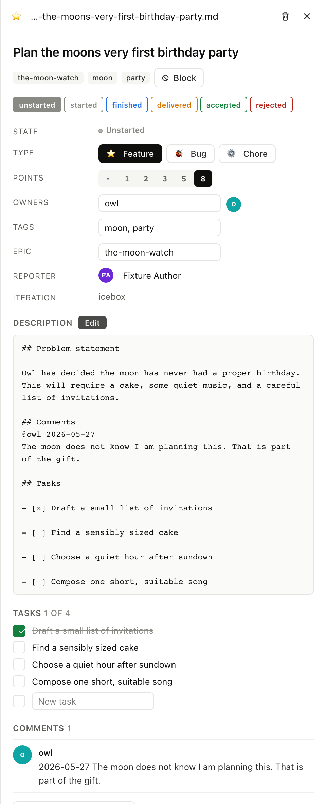
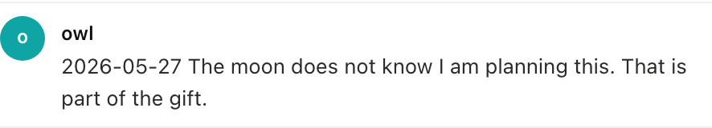
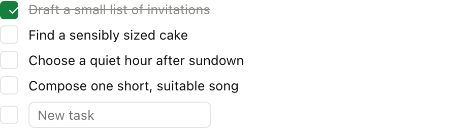

Comments and tasks
10. Comments and tasks
A story keeps its in-line discussion and substeps in the same file
as the metadata, with comments under ## Comments and tasks under
## Tasks, so opening the file in any editor shows the whole
conversation at once.
10.1 The detail panel
Clicking a story card opens the DetailPanel (the same shape the VS Code extension uses), with story metadata at the top, the body in the middle, and comments and tasks below; any of them can be edited inline.

$ am get-item stories/plan-the-moons-very-first-birthday-party.md
... full frontmatter + body + comments + tasks
get_item returns the whole story. get_comments and list_tasks
return just the section the agent needs.
Full envelope
{
"jsonrpc": "2.0",
"method": "tools/call",
"params": {
"name": "get_comments",
"arguments": {
"path": "stories/plan-the-moons-very-first-birthday-party.md"
}
}
}
10.2 Add a comment
Each comment is dated and attributed. The author is the lowercase
nickname of a user that exists in .am/users/.

$ am comment stories/plan-the-moons-very-first-birthday-party.md \
"Maybe Owl should bake the cake?" --author frog
✓ comment added
add_comment takes path, text, and an optional author. If author
is omitted the system uses the current git user.
Full envelope
{
"jsonrpc": "2.0",
"method": "tools/call",
"params": {
"name": "add_comment",
"arguments": {
"path": "stories/plan-the-moons-very-first-birthday-party.md",
"text": "Maybe Owl should bake the cake?",
"author": "frog"
}
}
}
What the file looks like after
The comment lands under ## Comments:
## Comments
@owl 2026-05-21
The moon does not know I am planning this. That is part of the gift.
@frog 2026-05-22
Maybe Owl should bake the cake?
10.3 Add a task and tick it
Tasks are a markdown checkbox list: not separate stories, but ordered substeps on one story.

$ am task add stories/plan-the-moons-very-first-birthday-party.md \
"Find a stand for the cake"
✓ task added
$ am task tick stories/plan-the-moons-very-first-birthday-party.md 2
✓ task toggled
add_task appends. set_task_done flips the checkbox by 1-based
index.
Full envelope
{
"jsonrpc": "2.0",
"method": "tools/call",
"params": {
"name": "set_task_done",
"arguments": {
"path": "stories/plan-the-moons-very-first-birthday-party.md",
"index": 2
}
}
}
What just happened
- A new line landed under
## Tasksas- [ ] Find a stand… - Ticking flipped the second item from
- [ ]to- [x] - The DetailPanel's task list re-renders; the file is the source of truth and git tracks every change.